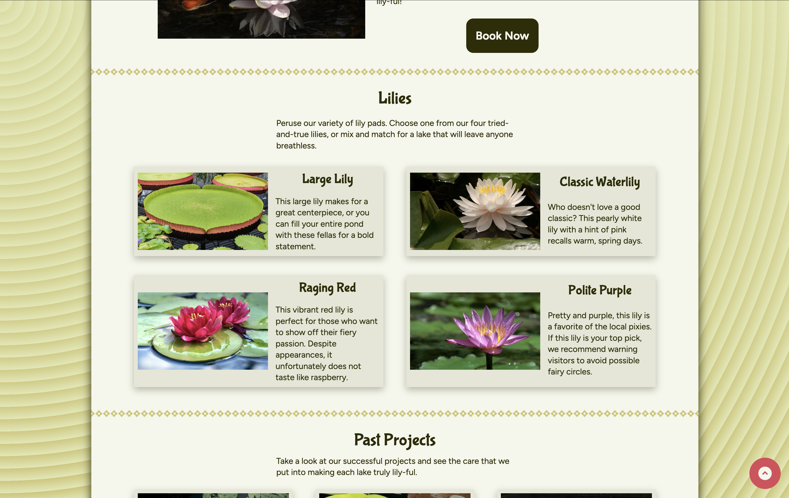
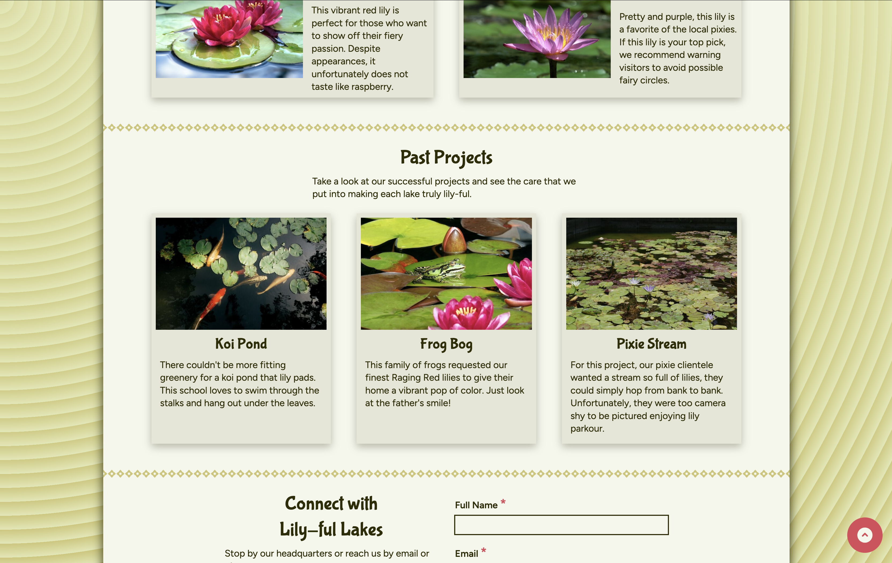
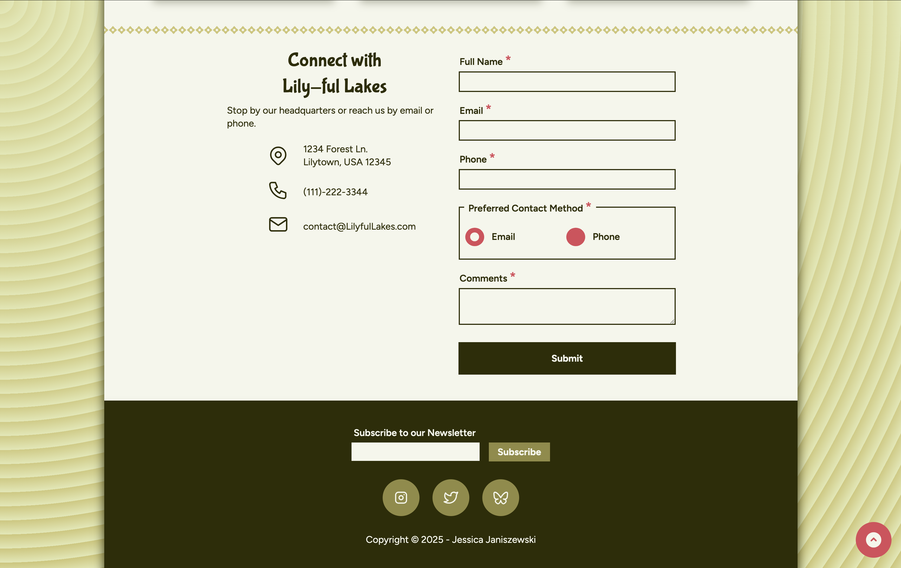

Project Overview
Objective
Design and develop a fully responsive, single-page website using semantic HTML and CSS, based on structured wireframes. The project brief emphasized accessibility, clear content hierarchy, and adherence to web standards while translating a predefined layout system into a polished, functional user experience.
My Role
Sole developer responsible for wireframing, content creation, front-end development, and cross-browser testing. Managed the full lifecycle from concept to final.
Tools
Figma, HTML5, CSS, Visual Studio Code, GitHub, browser developer tools (Chrome, Firefox, Safari/Edge) for testing and validation.
Deliverables
Responsive single-page website, semantic HTML structure, validated CSS styling, accessible contact form, and cross-browser testing documentation.
Project Links
Process
Approach
- Wireframing & Layout Selection: Selected structured layout components and created wireframes in Figma.
- Content Development & Design Direction: Defined site theme, wrote content, and selected typography, color palette, and visual elements with Web Content Accessibility Guidelines in mind.
- Semantic HTML Development: Built a clean, standards-compliant HTML structure.
- CSS Styling & Responsive Design: Implemented mobile-first CSS using variables, flexible layouts, and media queries to match wireframes across breakpoints while maintaining usability and visual consistency.
- Testing & Validation: Validated HTML and CSS, conducted cross-browser testing, identified rendering differences, and refined styles to ensure consistent behavior and accessibility across environments.
Visuals
Project Screenshots




Results
Outcomes
- Delivered a fully responsive, accessible website that meets semantic HTML and CSS validation standards.
- Ensured consistent layout and functionality across multiple browsers through structured testing and refinement.
- Improved usability through clear navigation, accessible form design, and mobile-first responsive implementation.